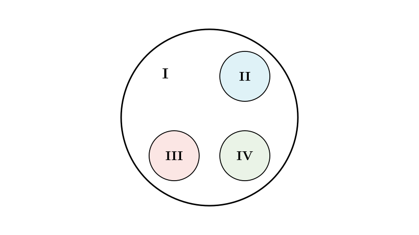
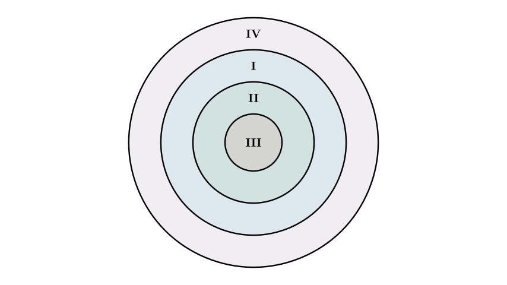
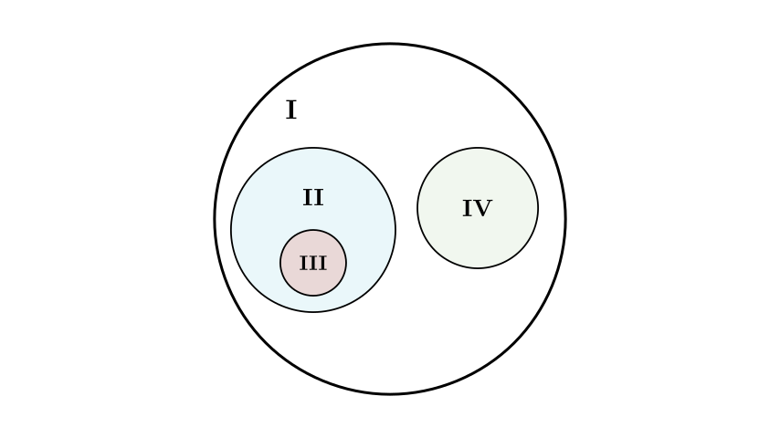
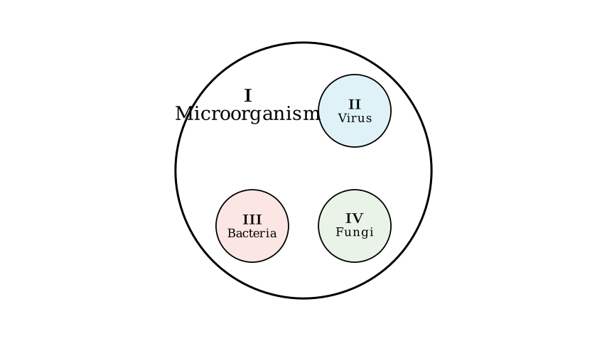

Problem Statement: If the diagram below represents the relationships between relevant concepts, which of the following options matches the diagram?
Diagram: A large circle labeled I contains three smaller, non-overlapping circles labeled II, III, and IV.
Options: | Option | I | II | III | IV | | :--- | :--- | :--- | :--- | :--- | | A | Fish | Reptiles | Birds | Mammals | | B | Chromosome | DNA | Gene | Nucleus | | C | Seed | Embryo | Cotyledon | Seed Coat | | D | Microorganism | Virus | Bacteria | Fungi |
Solution Approach: We need to identify the logical relationship shown in the diagram. The diagram depicts a set I that includes three distinct, non-overlapping subsets II, III, and IV. We will analyze each option to see which set of biological concepts fits this "inclusive but parallel" structure.

Analysis of the Diagram's Logic: The diagram represents a classification relationship: 1. Inclusion: Concept I is the supergroup (the whole) that contains concepts II, III, and IV. 2. Parallelism: Concepts II, III, and IV are distinct categories at the same level; they do not overlap (e.g., something cannot be both II and III).
Now, let's evaluate Option A: - I: Fish - II, III, IV: Reptiles, Birds, Mammals
Biologically, Fish, Reptiles, Birds, and Mammals are distinct classes within the phylum Chordata (Vertebrates). "Fish" is not a supergroup that contains Reptiles, Birds, or Mammals. If we were to draw this, all four would be separate circles (perhaps all inside a "Vertebrates" circle), but "Fish" would not contain the others. Thus, Option A is incorrect.
Next, let's look at the structure of Option B.

Analysis of Option B: - I: Chromosome - II: DNA - III: Gene - IV: Nucleus
The biological relationship here is hierarchical: - The Nucleus (IV) contains Chromosomes (I). - Chromosomes (I) are composed of DNA (II) and proteins. - DNA (II) contains segments called Genes (III).
Therefore, the relationship is $IV \supset I \supset II \supset III$ (Nucleus > Chromosome > DNA > Gene). This corresponds to a concentric diagram (nested circles), not the parallel sets shown in the problem. Option B is incorrect.
Now, let's evaluate Option C.

Analysis of Option C: - I: Seed - II: Embryo - III: Cotyledon - IV: Seed Coat
A Seed (I) is structurally composed of a Seed Coat (IV), an Embryo (II), and (in some plants) Endosperm. However, the Cotyledon (III) is actually part of the Embryo (II).
In the problem diagram, circle III is separate from circle II. In reality, for a seed, circle III (Cotyledon) should be drawn inside circle II (Embryo). Because the diagram shows III and II as separate, non-overlapping circles, Option C is incorrect.
Finally, let's evaluate Option D.

Analysis of Option D: - I: Microorganism - II: Virus - III: Bacteria - IV: Fungi
Microorganisms (I) is a broad term that encompasses various microscopic entities. The major groups include: 1. Viruses (II) (non-cellular) 2. Bacteria (III) (prokaryotic cells) 3. Fungi (IV) (eukaryotic cells like yeast and molds)
These three groups (II, III, IV) are distinct from one another (a virus is not a bacterium, a bacterium is not a fungus), yet they all fall under the umbrella of microorganisms (I).
This relationship perfectly matches the diagram: I contains II, III, and IV, and the three subgroups are separate.
Conclusion: Option D is the only one where the supergroup (I) contains three distinct, parallel subgroups (II, III, IV).
Final Answer: D